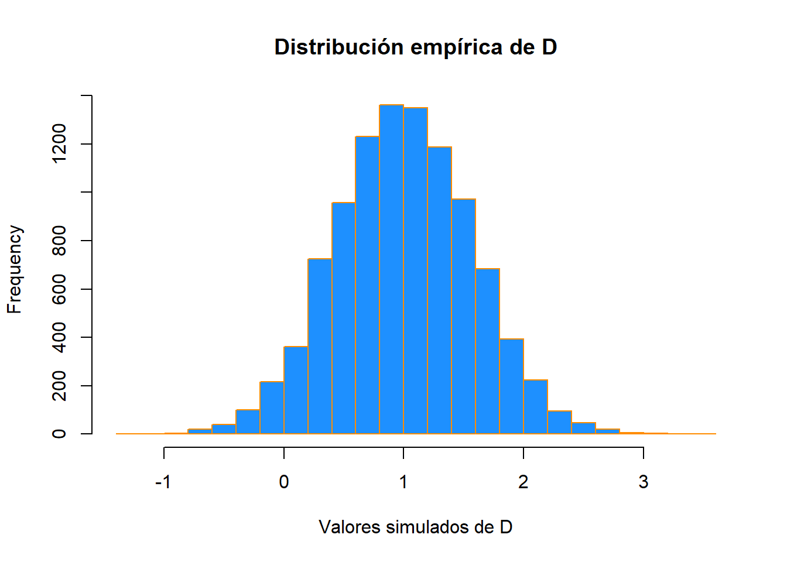

Capítulo 5 Probabilidad y estadística en R
5.1 Probabilidad en R
5.1.1 Distribuciones
Cuando trabajamos con diferentes distribuciones estadísticas, a menudo queremos hacer declaraciones probabilísticas basadas en la distribución.
Por lo general, queremos saber una de cuatro cosas:
- La densidad (pdf) a un valor particular.
- La distribución (cdf) a un valor particular.
- El valor de un cuantil correspondiente a una probabilidad particular.
- Una extracción aleatoria de valores de una distribución particular.
Esto solía hacerse con tablas estadísticas impresas en la parte posterior de los libros de texto. Ahora, R tiene funciones para obtener densidad, distribución, cuantiles y valores aleatorios.
La estructura general de nomenclaturas de las funciones relevantes de R:
dnamecalcula la densidad (pdf) en la entradax.pnamecalcula la distribución (cdf) en la entradax.qnamecalcula el cuantil con una probabilidad de entrada.rnamegenera valores aleatorios de una distribución particular.
Tenga en cuenta que name representa el nombre de la distribución dada.
Por ejemplo, considere una variable aleatoria \(X\) que es \(N(\mu = 2, \sigma^2 = 25)\). (Tenga en cuenta que estamos parametrizando usando la varianza \(\sigma^2\). Sin embargo, R usa la desviación estándar).
Para calcular el valor del pdf en x = 3, es decir, la altura de la curva en x = 3, utilice:
dnorm(x = 3, mean = 2, sd = 5)## [1] 0.07820854Para calcular el valor de la cdf en x = 3, es decir, \(P(X\leq3)\), la probabilidad de que \(X\) sea menor o igual que 3, utilice:
pnorm(q = 3, mean = 2, sd = 5)## [1] 0.5792597O, para calcular el cuantil de probabilidad 0.975, use:
qnorm(p = 0.975, mean = 2, sd = 5)## [1] 11.79982Por último, para generar una muestra aleatoria de tamaño n = 10, utilice:
rnorm(n = 10, mean = 2, sd = 5)## [1] 0.5696939 4.3481439 -2.8706426 -0.7995135 5.1168351 -0.7426379
## [7] 8.0450658 -0.1343514 4.9264343 -1.7316029Estas funciones existen para muchas otras distribuciones, que incluyen, entre otras:
| Command | Distribution |
|---|---|
*binom |
Binomial |
*t |
t |
*pois |
Poisson |
*f |
F |
*chisq |
Chi-cuadrado |
Donde * puede ser d,p, q yr. Cada distribución tendrá su propio conjunto de parámetros que deben pasarse a las funciones como argumentos. Por ejemplo, dbinom() no tendría argumentos para mean ysd, ya que no son parámetros de la distribución. En cambio, una distribución binomial suele estar parametrizada por \(n\) y \(p\), sin embargo, R elige llamarlos de otra manera. Para encontrar los nombres que usa R, usaríamos ?dbinom y veremos que R en su lugar llama a los argumentossize y prob. Por ejemplo:
dbinom(x = 6, size = 10, prob = 0.75)## [1] 0.145998También tenga en cuenta que, cuando se utilizan las funciones dname con distribuciones discretas, son las pmf de la distribución. Por ejemplo, el comando anterior es \(P(Y = 6)\) si \(Y\sim b(n = 10, p = 0,75)\). (La probabilidad de lanzar una moneda injusta “10” veces y ver “6” caras, si la probabilidad de que salga cara es 0.75).
5.2 Pruebas de hipótesis en R
Un requisito previo es la comprensión de los conceptos básicos de la prueba de hipótesis. Recuerde la estructura básica de las pruebas de hipótesis:
- Se realiza un modelo general y los supuestos relacionados. (Las más comunes son las observaciones que siguen una distribución normal).
- Se especifican las hipótesis nula (\(H_ {0}\)) y alternativa (\(H_ {1}\) o \(H_{A}\)). Por lo general, la nula especifica un valor particular de un parámetro.
- Con los datos dados, se calcula el valor del estadístico de prueba.
- Bajo los supuestos generales, además de asumir que la hipótesis nula es cierta, se conoce la distribución del estadístico de prueba.
- Dada la distribución y el valor del estadístico de la prueba, así como la forma de la hipótesis alternativa, podemos calcular un valor p de la prueba.
- Basándonos en el valor p y el nivel de significancia preespecificado, tomamos una decisión:
- No rechazar la hipótesis nula.
- Rechazar la hipótesis nula.
Haremos una revisión rápida de dos de las pruebas más comunes para mostrar cómo se realizan usando R.
5.2.1 Prueba t de una muestra: revisión
Suponer que \(x_{i} \sim \mathrm{N}(\mu,\sigma^{2})\) Y nosotros queremos probar \(H_{0}: \mu = \mu_{0}\) versus \(H_{1}: \mu \neq \mu_{0}.\)
Asumiendo que \(\sigma\) es desconocido, usamos la estadística de prueba \(t\) de Student de una muestra:
\[ t = \frac{\bar{x}-\mu_{0}}{s/\sqrt{n}} \sim t_{n-1}, \]
donde \(\bar{x} = \displaystyle\frac{\sum_{i=1}^{n}x_{i}}{n}\) y \(s = \sqrt{\displaystyle\frac{1}{n - 1}\sum_{i=1}^{n}(x_i - \bar{x})^2}\).
un intervalo de confianza al \(100(1 - \alpha)\)% para \(\mu\) esta dado por,
\[ \bar{x} \pm t_{n-1}(\alpha/2)\frac{s}{\sqrt{n}} \]
donde \(t_{n-1}(\alpha/2)\) es el valor crítico tal que \(P\left(t>t_{n-1}(\alpha/2)\right) = \alpha/2\) con \(n-1\) grados de libertad.
5.2.2 Prueba t de una muestra: ejemplo
Suponga que una tienda vende cajas de “16 onzas” de cereal Captain Crisp. Se tomó y pesó una muestra aleatoria de 9 cajas. El peso en onzas se almacena en el marco de datos capt_crisp.
capt_crisp = data.frame(weight = c(15.5, 16.2, 16.1, 15.8, 15.6, 16.0, 15.8, 15.9, 16.2))La compañía que fabrica el cereal Captain Crisp afirma que el peso promedio de una caja es de al menos 16 onzas. Supondremos que el peso del cereal en una caja se distribuye normalmente y usaremos un nivel de significancia de 0.05 para probar la afirmación de la compañía.
Probar \(H_{0}: \mu \geq 16\) versus \(H_{1}: \mu < 16\), el estadístico de prueba es
\[ t = \frac{\bar{x} - \mu_{0}}{s / \sqrt{n}} \]
La media muestral \(\bar{x}\) y la desviación estándar muestral \(s\) pueden calcularse fácilmente usando R. También creamos variables que almacenan la media hipotética y el tamaño de la muestra.
x_bar = mean(capt_crisp$weight)
s = sd(capt_crisp$weight)
mu_0 = 16
n = 9Entonces podemos calcular fácilmente la estadística de prueba.
t = (x_bar - mu_0) / (s / sqrt(n))
t## [1] -1.2Bajo la hipótesis nula, el estadístico de prueba tiene una distribución \(t\) con \(n - 1\) grados de libertad, en este caso 8.
Para completar la prueba, necesitamos obtener el valor p de la prueba. Dado que esta es una prueba unilateral con una alternativa menor que, necesitamos el área a la izquierda de -1.2 para una distribución \(t\) con 8 grados de libertad. Es decir,
\[ P(t_{8} < -1.2) \]
pt(t, df = n - 1)## [1] 0.1322336Ahora tenemos el valor p de nuestra prueba, que es mayor que nuestro nivel de significancia (0.05), por lo que no rechazamos la hipótesis nula.
Alternativamente, todo este proceso podría haberse completado usando una línea de código en R.
t.test(x = capt_crisp$weight, mu = 16, alternative = c("less"), conf.level = 0.95)##
## One Sample t-test
##
## data: capt_crisp$weight
## t = -1.2, df = 8, p-value = 0.1322
## alternative hypothesis: true mean is less than 16
## 95 percent confidence interval:
## -Inf 16.05496
## sample estimates:
## mean of x
## 15.9Proporcionamos a R los datos, el valor hipotético de \(\mu\), la alternativa y el nivel de confianza. R luego devuelve una gran cantidad de información que incluye:
- El valor del estadístico de prueba.
- Los grados de libertad de la distribución bajo la hipótesis nula.
- El valor p de la prueba.
- El intervalo de confianza que corresponde a la prueba.
- Una estimación de \(\mu\).
Dado que la prueba fue unilateral, R arrojó un intervalo de confianza unilateral. Si por el contrario quisiéramos un intervalo de dos caras para el peso medio de las cajas de cereal Captain Crisp, podríamos modificar nuestro código.
capt_test_results = t.test(capt_crisp$weight, mu = 16,
alternative = c("two.sided"), conf.level = 0.95)Esta vez hemos almacenado los resultados. Al hacerlo, podemos acceder directamente a partes de la salida de t.test(). Para ver qué información está disponible usamos la función names().
names(capt_test_results)## [1] "statistic" "parameter" "p.value" "conf.int" "estimate"
## [6] "null.value" "stderr" "alternative" "method" "data.name"Estamos interesados en el intervalo de confianza que se almacena en conf.int.
capt_test_results$conf.int## [1] 15.70783 16.09217
## attr(,"conf.level")
## [1] 0.95Comprobemos este intervalo “a mano”. La única información que nos falta es el valor crítico, \(t_{n-1}(\alpha/2) = t_{8}(0.025)\), que se puede calcular en R usando la función qt().
qt(0.975, df = 8)## [1] 2.306004Entonces, el IC del 95% para el peso medio de una caja de cereal se calcula ingresando a la fórmula,
\[ \bar{x} \pm t_{n-1}(\alpha/2) \frac{s}{\sqrt{n}} \]
c(mean(capt_crisp$weight) - qt(0.975, df = 8) * sd(capt_crisp$weight) / sqrt(9),
mean(capt_crisp$weight) + qt(0.975, df = 8) * sd(capt_crisp$weight) / sqrt(9))## [1] 15.70783 16.092175.2.3 Prueba t de dos muestras: revisión
Suponer que \(x_{i} \sim \mathrm{N}(\mu_{x}, \sigma^{2})\) y \(y_{i} \sim \mathrm{N}(\mu_{y}, \sigma^{2}).\)
Se quiere probar \(H_{0}: \mu_{x} - \mu_{y} = \mu_{0}\) versus \(H_{1}: \mu_{x} - \mu_{y} \neq \mu_{0}.\)
Asumiendo que \(\sigma\) es desconocido, use la estadística de prueba \(t\) de Student de dos muestras:
\[ t = \frac{(\bar{x} - \bar{y})-\mu_{0}}{s_{p}\sqrt{\frac{1}{n}+\frac{1}{m}}} \sim t_{n+m-2}, \]
donde \(\displaystyle\bar{x}=\frac{\sum_{i=1}^{n}x_{i}}{n}\), \(\displaystyle\bar{y}=\frac{\sum_{i=1}^{m}y_{i}}{m}\), y \(s_p^2 = \displaystyle\frac{(n-1)s_x^2+(m-1)s_y^2}{n+m-2}\).
Un IC al \(100(1-\alpha)\)% para \(\mu_{x}-\mu_{y}\) esta dado por
\[ (\bar{x} - \bar{y}) \pm t_{n+m-2}(\alpha/2) \left(s_{p}\textstyle\sqrt{\frac{1}{n}+\frac{1}{m}}\right), \]
donde \(t_{n+m-2}(\alpha/2)\) es el valor crítico tal que \(P\left(t>t_{n+m-2}(\alpha/2)\right)=\alpha/2\).
5.2.4 Prueba t de dos muestras: Ejemplo
Suponga que las distribuciones de \(X\) y \(Y\) son \(\mathrm{N}(\mu_{1},\sigma^{2})\) y \(\mathrm{N}(\mu_{2},\sigma^{2})\), respectivamente. Dadas las \(n = 6\) observaciones de \(X\),
x = c(70, 82, 78, 74, 94, 82)
n = length(x)y las \(m = 8\) observaciones de \(Y\),
y = c(64, 72, 60, 76, 72, 80, 84, 68)
m = length(y)Probaremos \(H_{0}: \mu_{1} = \mu_{2}\) versus \(H_{1}: \mu_{1} > \mu_{2}\).
Primero, tenga en cuenta que podemos calcular las medias muestrales y las desviaciones estándar.
x_bar = mean(x)
s_x = sd(x)
y_bar = mean(y)
s_y = sd(y)Luego podemos calcular la desviación estándar combinada.
\[ s_{p} = \sqrt{\frac{(n-1)s_{x}^{2}+(m-1)s_{y}^{2}}{n+m-2}} \]
s_p = sqrt(((n - 1) * s_x ^ 2 + (m - 1) * s_y ^ 2) / (n + m - 2))Por lo tanto, el estadístico de prueba \(t\) relevante viene dado por
\[ t = \frac{(\bar{x}-\bar{y})-\mu_{0}}{s_{p}\sqrt{\frac{1}{n}+\frac{1}{m}}}. \]
t = ((x_bar - y_bar) - 0) / (s_p * sqrt(1 / n + 1 / m))
t## [1] 1.823369Tenga en cuenta que \(t \sim t_{n + m - 2} = t_{12}\), para que podamos calcular el valor p, que es
\[ P(t_{12} > 1.8233692). \]
1 - pt(t, df = n + m - 2)## [1] 0.04661961Pero, de nuevo, podríamos haber realizado simplemente esta prueba en una línea de R.
t.test(x, y, alternative = c("greater"), var.equal = TRUE)##
## Two Sample t-test
##
## data: x and y
## t = 1.8234, df = 12, p-value = 0.04662
## alternative hypothesis: true difference in means is greater than 0
## 95 percent confidence interval:
## 0.1802451 Inf
## sample estimates:
## mean of x mean of y
## 80 72Recuerde que una prueba \(t\) de dos muestras se puede realizar con o sin un supuesto de varianza igual. Aquí, var.equal = TRUE le dice aR que nos gustaría realizar la prueba bajo el supuesto de varianza igual.
Arriba llevamos a cabo el análisis usando dos vectores x y y. En general, tendremos preferencia por usar marcos de datos.
t_test_data = data.frame(values = c(x, y),
group = c(rep("A", length(x)), rep("B", length(y))))Ahora tenemos los datos almacenados en una sola variable (values) y hemos creado una segunda variable (group) que indica a qué “muestra” pertenece el valor.
t_test_data## values group
## 1 70 A
## 2 82 A
## 3 78 A
## 4 74 A
## 5 94 A
## 6 82 A
## 7 64 B
## 8 72 B
## 9 60 B
## 10 76 B
## 11 72 B
## 12 80 B
## 13 84 B
## 14 68 BAhora, para realizar la prueba, todavía usamos la función t.test() pero con la sintaxis ~ y un argumento data.
t.test(values ~ group, data = t_test_data,
alternative = c("greater"), var.equal = TRUE)##
## Two Sample t-test
##
## data: values by group
## t = 1.8234, df = 12, p-value = 0.04662
## alternative hypothesis: true difference in means is greater than 0
## 95 percent confidence interval:
## 0.1802451 Inf
## sample estimates:
## mean in group A mean in group B
## 80 725.3 Simulación
La simulación y el ajuste del modelo son procesos relacionados pero opuestos.
- En simulación, se conoce el proceso de generación de datos. Conoceremos la forma del modelo así como el valor de cada uno de los parámetros. En particular, a menudo controlaremos la distribución y los parámetros que definen la aleatoriedad o el ruido en los datos.
- En ajuste de modelo, se conocen los datos. Luego asumiremos una cierta forma de modelo y encontraremos los mejores valores posibles de los parámetros dados los datos observados. Esencialmente buscamos descubrir la verdad. A menudo, intentaremos ajustarnos a muchos modelos y aprenderemos métricas para evaluar qué modelo encaja mejor.
Simulación vs modelado
A menudo, simularemos datos de acuerdo con un proceso que decidamos, posteriormente usaremos un método de modelado visto. Luego podemos verificar qué tan bien funciona el método, ya que conocemos el proceso de generación de datos.
Una de las mayores fortalezas de R es su capacidad para realizar simulaciones utilizando funciones integradas para generar muestras aleatorias a partir de ciertas distribuciones. Veremos dos ejemplos muy simples aquí.
5.3.1 Diferencias emparejadas
Consider the model:
\[ \begin{split} X_{11}, X_{12}, \ldots, X_{1n} \sim N(\mu_1,\sigma^2)\\ X_{21}, X_{22}, \ldots, X_{2n} \sim N(\mu_2,\sigma^2) \end{split} \]
Se asume que \(\mu_1 = 6\), \(\mu_2 = 5\), \(\sigma^2 = 4\) y \(n = 25\).
\[ \begin{aligned} \bar{X}_1 &= \displaystyle\frac{1}{n}\sum_{i=1}^{n}X_{1i}\\ \bar{X}_2 &= \displaystyle\frac{1}{n}\sum_{i=1}^{n}X_{2i}\\ D &= \bar{X}_1 - \bar{X}_2. \end{aligned} \]
Supongamos que nos gustaría calcular \(P(0<D<2)\). Primero necesitaremos obtener la distribución de \(D\).
Ahora,
\[ \bar{X}_1 \sim N\left(\mu_1,\frac{\sigma^2}{n}\right) \]
y
\[ \bar{X}_2 \sim N\left(\mu_2,\frac{\sigma^2}{n}\right). \]
Luego,
\[ D = \bar{X}_1 - \bar{X}_2 \sim N\left(\mu_1-\mu_2, \frac{\sigma^2}{n} + \frac{\sigma^2}{n}\right) = N\left(6-5, \frac{4}{25} + \frac{4}{25}\right). \]
Entnonces,
\[ D \sim N(\mu = 1, \sigma^2 = 0.32). \]
Thus,
\[ P(0 < D < 2) = P(D < 2) - P(D < 0). \]
Esto se puede calcular usando R sin necesidad de estandarizar primero o usar una tabla.
pnorm(2, mean = 1, sd = sqrt(0.32)) - pnorm(0, mean = 1, sd = sqrt(0.32))## [1] 0.9229001Un enfoque alternativo sería simular una gran cantidad de observaciones de \(D\) y luego usar la distribución empírica para calcular la probabilidad.
Nuestra estrategia será:
- Generar una muestra de 25 observaciones aleatorias a partir de \(N(\mu_1 = 6,\sigma^2 = 4)\). Llamar a la media de esta muestra \(\bar {x}_{1s}\).
- Generar una muestra de 25 observaciones aleatorias a partir de \(N(\mu_1 = 5,\sigma^2 = 4)\). Llamar a la media de esta muestra ${x}_{2s} $.
- Calcular las diferencias de las medias, \(d_s=\bar{x}_{1s}-\bar{x}_{2s}\).
Repetir el proceso un gran número de veces. Luego usar la distribución de las observaciones simuladas de \(d_s\) como una estimación de la verdadera distribución de \(D\).
set.seed(42)
num_samples = 10000
differences = rep(0, num_samples)Antes de iniciar el ciclo for para realizar la operación, establecer una semilla para la reproducibilidad, crear y configurar una variable num_samples que definirá el número de repeticiones y, por último, crear una variable differences que almacenará los valores simulados, \(d_s\).
Usando set.seed() podemos reproducir los resultados aleatorios de rnorm() cada vez que comience desde esa línea.
for (s in 1:num_samples) {
x1 = rnorm(n = 25, mean = 6, sd = 2)
x2 = rnorm(n = 25, mean = 5, sd = 2)
differences[s] = mean(x1) - mean(x2)
}Para estimar $P(0<D<2) $ encontrar la proporción de valores de \(d_s\) (entre los 10^{4} valores de \(d_s\) generados) que están entre 0 y 2.
mean(0 < differences & differences < 2)## [1] 0.9222Recuerde que arriba la distribución de \(D\) es \(N(\mu=1,\sigma^2=0.32)\)
Si miramos un histograma de las diferencias, encontramos que se parece mucho a una distribución normal.
hist(differences, breaks = 20,
main = "Distribución empírica de D",
xlab = "Valores simulados de D",
col = "dodgerblue",
border = "darkorange")
Además, la media y la varianza de la muestra están muy cerca de lo que cabría esperar.
mean(differences)## [1] 1.001423var(differences)## [1] 0.3230183También podríamos haber logrado esta tarea con una sola línea de R más “idiomática”.
set.seed(42)
diffs = replicate(10000, mean(rnorm(25, 6, 2)) - mean(rnorm(25, 5, 2)))Use ?Replicate para echar un vistazo a la documentación de la función replicate y vea si puede entender cómo esta línea realiza las mismas operaciones que ejecutó nuestro ciclo for anterior.
mean(differences == diffs)## [1] 1Vemos que al establecer la misma semilla para la aleatorización, ¡obtenemos resultados idénticos!
5.3.2 Distribución de una media muestral
Para otro ejemplo de simulación, simularemos observaciones de una distribución de Poisson y examinaremos la distribución empírica de la media muestral de estas observaciones.
Recuerde, si
\[ X \sim Pois(\mu) \]
luego
\[ E[X] = \mu \]
y
\[ Var[X] = \mu. \]
Además, recuerde que para una variable aleatoria \(X\) con media finita \(\mu\) y varianza finita \(\sigma^2\), el teorema del límite central nos dice que la media, \(\bar{X}\) de una muestra aleatoria de tamaño \(n\) es aproximadamente normal para valores grandes de \(n\). Específicamente, como $n$,
\[ \bar{X} \overset{d}{\to} N\left(\mu, \frac{\sigma^2}{n}\right). \]
Lo siguiente verifica este resultado para una distribución de Poisson con \(\mu=10\) y un tamaño de muestra de \(n=50\).
set.seed(1337)
mu = 10
sample_size = 50
samples = 100000
x_bars = rep(0, samples)for(i in 1:samples){
x_bars[i] = mean(rpois(sample_size, lambda = mu))
}x_bar_hist = hist(x_bars, breaks = 50,
main = "Histograma de medias muestrales",
xlab = "Medias muestrales")Ahora compararemos las estadísticas de muestra de la distribución empírica con sus valores conocidos basados en la distribución principal.
c(mean(x_bars), mu)## [1] 10.00008 10.00000c(var(x_bars), mu / sample_size)## [1] 0.1989732 0.2000000c(sd(x_bars), sqrt(mu) / sqrt(sample_size))## [1] 0.4460641 0.4472136Y aquí, calcularemos la proporción de medias muestrales que están dentro de 2 desviaciones estándar de la media poblacional.
mean(x_bars > mu - 2 * sqrt(mu) / sqrt(sample_size) &
x_bars < mu + 2 * sqrt(mu) / sqrt(sample_size))## [1] 0.95429Este último histograma utiliza un truco para sombrear aproximadamente las barras que están dentro de dos desviaciones estándar de la media).
shading = ifelse(x_bar_hist$breaks > mu - 2 * sqrt(mu) / sqrt(sample_size) &
x_bar_hist$breaks < mu + 2 * sqrt(mu) / sqrt(sample_size),
"darkorange", "dodgerblue")
x_bar_hist = hist(x_bars, breaks = 50, col = shading,
main = "Histograma de medias muestrales, Dos desviaciones estándar",
xlab = "Medias muestrales")